Ciel dégagé
Principalement dégagé
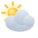
Partiellement nuageux
Couvert
Brouillard
Brouillard givrant
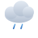
Bruine légère
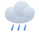
Bruine modérée
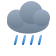
Bruine dense
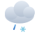
Bruine verglaçante légère
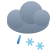
Bruine verglaçante dense
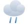
Pluie légère
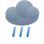
Pluie modérée
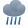
Pluie forte
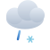
Pluie verglaçante légère
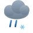
Pluie verglaçante forte
Neige légère
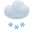
Neige modérée
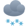
Neige forte
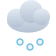
Grains de neige
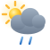
Averses légères
Averses modérées
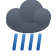
Averses violentes
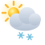
Averses de neige légères
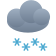
Averses de neige fortes
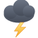
Orage
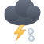
Orage avec grêle
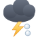
Orage fort avec grêle